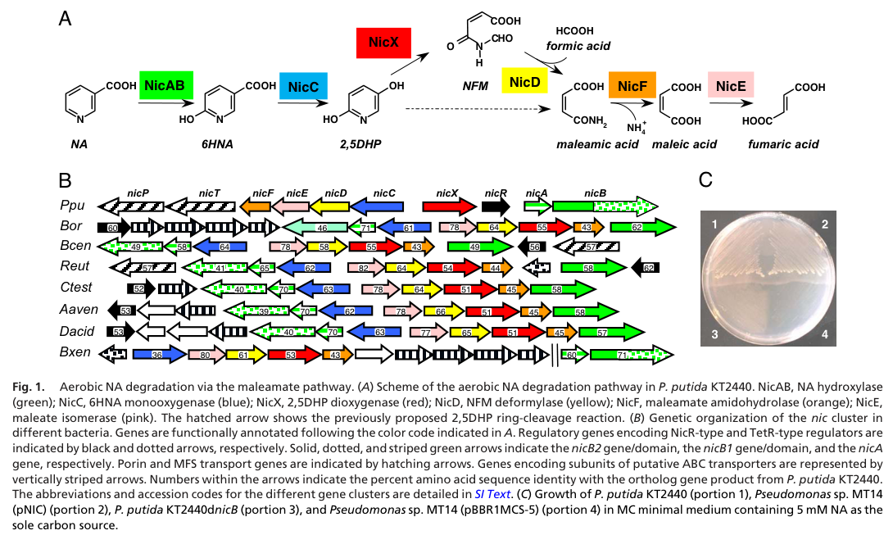

maiA encodes maleate cis-trans isomerase, also annotated as NicE, in the aerobic nicotinate degradation pathway. It converts maleate to fumarate downstream of maleamate formation, connecting nicotinate-derived carbon to central metabolism.
| GO Term | Evidence | Action | Reason |
|---|---|---|---|
|
GO:0050076
maleate isomerase activity
|
IEA
GO_REF:0000120 |
ACCEPT |
Summary: Maleate isomerase activity is the correct molecular function for MaiA.
Reason: UniProt assigns EC 5.2.1.1 and gives the maleate-to-fumarate reaction for MaiA.
Supporting Evidence:
file:PSEPK/maiA/maiA-uniprot.txt
Catalyzes cis-trans isomerization of the C2-C3 double bond in
file:PSEPK/maiA/maiA-uniprot.txt
Reaction=maleate = fumarate
file:PSEPK/maiA/maiA-goa.tsv
GO:0050076 maleate isomerase activity
file:PSEPK/maiA/maiA-deep-research-falcon.md
**Maleate cis–trans isomerase (MaiA/NicE; EC 5.2.1.1)** catalyzes the geometric isomerization:
|
|
GO:0050076
maleate isomerase activity
|
ISS
GO_REF:0000024 |
ACCEPT |
Summary: The ISS maleate isomerase annotation is consistent with the curated MaiA function.
Reason: The transferred annotation matches the UniProt catalytic description and EC assignment.
Supporting Evidence:
file:PSEPK/maiA/maiA-uniprot.txt
Catalyzes cis-trans isomerization of the C2-C3 double bond in
file:PSEPK/maiA/maiA-uniprot.txt
Reaction=maleate = fumarate
file:PSEPK/maiA/maiA-goa.tsv
UniProtKB:O24766
file:PSEPK/maiA/maiA-deep-research-falcon.md
Primary substrate is **maleate/maleic acid**, yielding **fumarate** in the physiological forward direction
|
|
GO:0051289
protein homotetramerization
|
ISS
GO_REF:0000024 |
REMOVE |
Summary: The homotetramerization annotation is contradicted by the curated MaiA UniProt entry.
Reason: The maiA UniProt SUBUNIT annotation says Homodimer by HAMAP-Rule:MF_00943, directly contradicting the ISS-transferred homotetramerization annotation from UniProtKB:O24766; this is likely an erroneous ISS transfer.
Supporting Evidence:
file:PSEPK/maiA/maiA-goa.tsv
GO:0051289 protein homotetramerization
file:PSEPK/maiA/maiA-uniprot.txt
SUBUNIT: Homodimer
|
|
GO:1901848
nicotinate catabolic process
|
IC
PMID:18678916 Deciphering the genetic determinants for aerobic nicotinic a... |
NEW |
Summary: MaiA should be connected to nicotinate catabolism because it is NicE, the maleate isomerase step in the aerobic nicotinate pathway.
Reason: UniProt explicitly places MaiA in the aerobic nicotinate degradation pathway and the nic cluster paper characterizes this pathway in KT2440.
Supporting Evidence:
file:PSEPK/maiA/maiA-uniprot.txt
maleate to yield fumarate in the aerobic nicotinate degradation
PMID:18678916
responsible for the aerobic NA degradation
file:PSEPK/maiA/maiA-deep-research-falcon.md
In the aerobic nicotinate degradation pathway, this reaction serves as the **terminal step** that converts a pathway intermediate into **fumarate**, a tricarboxylic acid (TCA/Krebs) cycle intermediate
file:PSEPK/maiA/maiA-deep-research-falcon.md
PP_3942/nicE expression decreases in a **finR deletion** background, linking nicE transcription to the regulatory program supporting NA catabolism
|
Q: Is MaiA/NicE essential for KT2440 growth on nicotinate under all tested aerobic conditions, or can maleate be consumed by alternative enzymes?
Experiment: Compare wild-type and maiA/nicE knockout strains for growth on nicotinate and maleate accumulation, with complementation by catalytic-site mutants.
Type: pathway mutant and metabolite profiling assay
The research report should be a detailed narrative explaining the function, biological processes, and localization of the gene product. Citations should be given for all claims.
You should prioritize authoritative reviews and primary scientific literature when conducting research. You can supplement
this with annotations you find in gene/protein databases, but these can be outdated or inaccurate.
We are specifically interested in the primary function of the gene - for enzymes, what reaction is catalyzed, and what is the substrate specificity? For transporters, what is the substrate? For structural proteins or adapters, what is the broader structural role? For signaling molecules, what is the role in the pathway.
We are interested in where in or outside the cell the gene product carries out its function.
We are also interested in the signaling or biochemical pathways in which the gene functions. We are less interested in broad pleiotropic effects, except where these elucidate the precise role.
Include evidence where possible. We are interested in both experimental evidence as well as inference from structure, evolution, or bioinformatic analysis. Precise studies should be prioritized over high-throughput, where available.
The target protein is maleate isomerase / maleate cis–trans isomerase (EC 5.2.1.1) encoded in Pseudomonas putida KT2440 by nicE, mapped to locus PP_3942 (synonym maiA) in the nic (nicotinic acid degradation) gene region. In KT2440, PP_3942 is explicitly annotated as nicE (maleate isomerase) in a nic-cluster transcriptomic study, and the KT2440 nic cluster reconstruction assigns NicE to the terminal maleate→fumarate step. This matches the UniProt-provided context for Q88FY4 (xiao2018finrregulatesexpression pages 2-3, jimenez2008decipheringthegenetic pages 5-6).
Maleate cis–trans isomerase (MaiA/NicE; EC 5.2.1.1) catalyzes the geometric isomerization:
In the aerobic nicotinate degradation pathway, this reaction serves as the terminal step that converts a pathway intermediate into fumarate, a tricarboxylic acid (TCA/Krebs) cycle intermediate (jimenez2008decipheringthegenetic pages 5-6, huang2020physiologyofa pages 2-5).
Jiménez et al. reconstructed the KT2440 nic gene cluster (described as nicTPFEDCXRAB) encoding an aerobic nicotinic acid (NA) degradation route proceeding through 2,5-dihydroxypyridine (2,5DHP) and the maleamate pathway, generating maleate/maleic acid, then fumarate (jimenez2008decipheringthegenetic pages 1-2, jimenez2008decipheringthegenetic pages 5-6).
The pathway segment most directly relevant to NicE is:
- NicX: ring cleavage of 2,5DHP → N-formylmaleamate
- NicD: deformylation → maleamate (maleamic acid) + formate
- NicF: hydrolysis → maleate (maleic acid) + NH3
- NicE (MaiA): maleate → fumarate (terminal step)
This functional placement is shown in the pathway reconstruction and supported by sequence-based assignment for NicE (jimenez2008decipheringthegenetic pages 5-6, huang2020physiologyofa pages 2-5).
Visual evidence. Figure 1 from Jiménez et al. depicts both the pathway and the nic gene cluster, including nicE annotated as maleate isomerase (jimenez2008decipheringthegenetic media 451352a1).
Work surveying and characterizing bacterial maleate isomerases indicates that enzymes of this class commonly belong to the Aspartate/Glutamate racemase superfamily (PF01177) and frequently feature two catalytic cysteines. These enzymes generally favor the maleate→fumarate direction due to the thermodynamic/kinetic bias of the system (melgar2017screeningofaa pages 10-13, melgar2017screeningofa pages 10-13).
For KT2440 NicE specifically, Jiménez et al. note two conserved cysteines C104 and C222 implicated in catalytic activity based on prior characterization of maleate cis/trans isomerases (jimenez2008decipheringthegenetic pages 5-6).
The KT2440 nic genes are organized as a contiguous cluster (nicTPFEDCXRAB) encoding uptake/regulation and enzymatic steps for aerobic NA utilization (jimenez2008decipheringthegenetic pages 1-2). The cluster map and annotation explicitly include nicE as maleate isomerase (jimenez2008decipheringthegenetic pages 2-3, jimenez2008decipheringthegenetic media 451352a1).
In the KT2440 reconstruction, NicE was assigned as the maleate cis/trans-isomerase catalyzing the final maleate→fumarate step based on significant sequence similarity to a previously characterized maleate cis/trans-isomerase and presence of conserved catalytic cysteines (jimenez2008decipheringthegenetic pages 5-6).
A KT2440 transcriptomic study investigating the LysR-type regulator FinR reports that PP_3942 (nicE) is part of the nic cluster (11 genes) responsible for aerobic NA degradation and is annotated as maleate isomerase. PP_3942/nicE expression decreases in a finR deletion background, linking nicE transcription to the regulatory program supporting NA catabolism (xiao2018finrregulatesexpression pages 2-3).
None of the retrieved KT2440-focused sources provided direct experimental localization (e.g., fractionation, signal peptide mapping, microscopy) for NicE/MaiA. Therefore, cellular localization remains unresolved experimentally in the evidence set. However, the pathway is an intracellular catabolic route and NicE is not described as secreted or periplasmic in the retrieved studies; thus, a cytosolic role is the default inference but should be treated as inference rather than demonstrated localization based on the provided evidence (jimenez2008decipheringthegenetic pages 5-6, xiao2018finrregulatesexpression pages 2-3).
The KT2440 reconstruction provides residue-level mechanistic markers for NicE (C104, C222) but does not provide kinetic constants for KT2440 NicE itself in the retrieved excerpts (jimenez2008decipheringthegenetic pages 5-6).
The same study reports high conservation of nic clusters across several P. putida strains, with ~95% sequence identity for nic genes, supporting functional conservation of NicE in this lineage (jimenez2008decipheringthegenetic pages 5-6).
A review of nicotine catabolism that compares terminal enzymes across related pathways reports that a maleate cis/trans-isomerase (Iso) from P. putida S16 has 71.6% identity to KT2440 NicE, and provides activity metrics for this homolog: 26.8 kDa, specific activity 9.4 U/mg, and apparent Km 0.69 mM for maleic acid at pH 8.4 and 30°C (huang2020physiologyofa pages 6-7). This is not a direct measurement of KT2440 NicE but supports the plausibility of similar substrate specificity (maleate/maleic acid) and comparable enzymology.
A maleate-isomerase screening/engineering study summarizes that equilibrium constants for maleate⇄fumarate isomerization are strongly biased toward fumarate, reporting Keq ~47 to ~500 (depending on system/assay), consistent with most MIs favoring maleate→fumarate and showing only minimal reverse conversion (often ~2% under tested conditions) (melgar2017screeningofaa pages 10-13, melgar2017screeningofa pages 10-13). This provides mechanistic context for interpreting NicE’s physiological role as a pathway “sink” feeding fumarate into central metabolism.
A 2023 review on microbial L-aspartate production describes an industrially relevant route using maleate as feedstock, where maleate is first converted to fumarate by maleate cis–trans isomerase (MaiA) and then converted to L-aspartate by aspartase in engineered E. coli. In a 5-L fermenter, this approach achieved 419.8 g/L L-aspartate with a conversion ratio of 0.72, enabled by co-overexpression and tuning the activity ratio of MaiA and AspA via ribosome binding site regulation (shi2023metabolicengineeringof pages 2-4). Although not a KT2440-specific study, it demonstrates contemporary deployment of MaiA-type maleate isomerization as a high-flux industrial bioconversion step.
A 2024 metagenomics + interpretable ML study on global soil organic carbon (SOC) reports that K01799 (maleate isomerase; EC 5.2.1.1; genes nicE/maiA) emerged as the single most predictive taxon–function node pair in their DGCNN model for SOC, in association with Astrumicrobium roseum (gardiner2024dgcnnapproachlinks pages 7-9). The authors also provide prevalence statistics from AnnoTree/GTDB: K01799 is present in 4,314 of 191,527 bacterial genomes (2.3%), and only in three Verrucomicrobiota genomes, suggesting the function is relatively rare but can be highly informative in specific ecological contexts (gardiner2024dgcnnapproachlinks pages 7-9).
Biocatalysis / metabolic engineering: MaiA-catalyzed maleate→fumarate is exploited in engineered microbial production chains, particularly in high-titer L-aspartate production from maleate feedstock (5-L fermenter; 419.8 g/L; 0.72 conversion ratio) (shi2023metabolicengineeringof pages 2-4).
Environmental metabolism / biodegradation: In KT2440, NicE is part of a dedicated gene cluster enabling aerobic utilization of nicotinic acid (vitamin B3) as a carbon source, converting ring-cleavage intermediates to fumarate for assimilation (jimenez2008decipheringthegenetic pages 1-2, jimenez2008decipheringthegenetic pages 5-6).
Soil ecosystem functional marker: Maleate isomerase (K01799; nicE/maiA) can serve as a functional gene indicator in metagenome-based modeling of SOC-related ecological patterns (gardiner2024dgcnnapproachlinks pages 7-9).
Experiment-supported / strongly supported assignment (KT2440 context): NicE (PP_3942; maiA) is the maleate cis–trans isomerase responsible for converting maleate (maleic acid) to fumarate at the end of the KT2440 aerobic nicotinate degradation pathway, based on pathway reconstruction, genomic colocalization with other required nic genes, and sequence features (conserved catalytic cysteines) matching characterized maleate isomerases (jimenez2008decipheringthegenetic pages 5-6, xiao2018finrregulatesexpression pages 2-3).
Supported: Primary substrate is maleate/maleic acid, yielding fumarate in the physiological forward direction (jimenez2008decipheringthegenetic pages 5-6, huang2020physiologyofa pages 2-5).
Caveat: Broader substrate promiscuity has been noted for some enzymes in related families, and maleate isomerase annotations can be unreliable without experimental validation; this is an annotation risk for distant homologs, but the KT2440 NicE assignment is strengthened by pathway context and conserved motifs/residues (melgar2017screeningofa pages 10-13, jimenez2008decipheringthegenetic pages 5-6).
Evidence gap: No direct KT2440 localization experiments were retrieved. Any statement that NicE is cytosolic should be treated as a reasonable inference rather than established fact based on the current evidence set.
The following table consolidates identifiers, pathway role, mechanistic features, regulation, and quantitative metrics (including which data are direct vs homolog/family-level):
| Gene/protein identifiers | Enzymatic reaction & pathway step | Evidence type | Mechanistic notes | Regulation / operon context | Quantitative data | Primary source & URL |
|---|---|---|---|---|---|---|
| maiA / nicE / PP_3942 / UniProt Q88FY4 in Pseudomonas putida KT2440; annotated as maleate isomerase / maleate cis-trans isomerase (xiao2018finrregulatesexpression pages 2-3) | Catalyzes the terminal step of the aerobic nicotinic acid degradation maleamate pathway: maleic acid (maleate) -> fumaric acid (fumarate), feeding central metabolism (jimenez2008decipheringthegenetic pages 5-6, huang2020physiologyofa pages 2-5) | Bioinformatic assignment in KT2440 based on similarity to characterized maleate cis/trans-isomerases; pathway reconstruction places NicE after NicF (jimenez2008decipheringthegenetic pages 5-6) | Member of the maleate isomerase / Aspartate-Glutamate racemase superfamily; characterized family members are typically ~250 aa and use catalytic cysteines (melgar2017screeningofa pages 10-13, melgar2017screeningofaa pages 10-13) | Resides in contiguous nicTPFEDCXRAB / nic cluster for aerobic nicotinate catabolism (jimenez2008decipheringthegenetic pages 2-3, jimenez2008decipheringthegenetic pages 1-2) | Family reaction equilibrium strongly favors fumarate; reported Keq ~47 to ~500 for maleate<->fumarate in the MI literature (not KT2440-specific) (melgar2017screeningofaa pages 10-13, melgar2017screeningofa pages 10-13) | Jiménez et al., 2008, PNAS. https://doi.org/10.1073/pnas.0802273105 |
| nicE (PP_3942) specifically mapped in KT2440 transcriptomic study; listed as maleate isomerase in gene table (xiao2018finrregulatesexpression pages 2-3) | Same terminal conversion maleate -> fumarate in nicotinic acid utilization pathway (jimenez2008decipheringthegenetic pages 5-6, huang2020physiologyofa pages 2-5) | Genetic / expression evidence: nicE expression decreases in a finR mutant, linking PP_3942 to active nicotinate-catabolic transcriptional program (xiao2018finrregulatesexpression pages 2-3) | No direct KT2440 enzyme assay in retrieved text; function supported by annotation plus pathway-gene colocalization (xiao2018finrregulatesexpression pages 2-3, jimenez2008decipheringthegenetic pages 2-3) | nicE is within an 11-gene nic cluster; FinR positively affects nic-cluster expression, especially nicC and nicX operons, and PP_3942/nicE is among downregulated nic genes in the finR mutant (xiao2018finrregulatesexpression pages 2-3) | Quantitative fold-changes for nicE were not provided in retrieved excerpts, but the study reports expression decreases for multiple nic genes in the finR mutant (xiao2018finrregulatesexpression pages 2-3) | Xiao et al., 2018, Applied and Environmental Microbiology. https://doi.org/10.1128/AEM.01210-18 |
| NicE in KT2440 nic cluster; visual cluster map places nicE adjacent to nicF and upstream catabolic genes (jimenez2008decipheringthegenetic pages 2-3, jimenez2008decipheringthegenetic media 451352a1) | Last step downstream of NicF (maleamate amidohydrolase), completing conversion of ring-cleavage products into fumarate (jimenez2008decipheringthegenetic pages 5-6, jimenez2008decipheringthegenetic pages 4-5) | Pathway genetics: the full nic cluster restored growth on nicotinic acid when transferred on a 14-kb plasmid; several cluster genes are essential for growth on nicotinic acid, supporting cluster-level function assignment (jimenez2008decipheringthegenetic pages 2-3, jimenez2008decipheringthegenetic pages 1-2) | Catalytic cysteines C104 and C222 in NicE are conserved and cited as implicated in activity (jimenez2008decipheringthegenetic pages 5-6) | Cluster usually includes nicR regulator and nicT / transport genes, indicating local uptake-plus-catabolism module (jimenez2008decipheringthegenetic pages 5-6, jimenez2008decipheringthegenetic pages 1-2) | nic clusters in P. putida strains show high sequence identity (~95%); supports conservation of NicE assignment across strains (jimenez2008decipheringthegenetic pages 5-6) | Jiménez et al., 2008, PNAS. https://doi.org/10.1073/pnas.0802273105 |
| KT2440 NicE compared with homologous Iso enzymes from nicotine-degrading bacteria (huang2020physiologyofa pages 6-7) | Homologous step remains maleate -> fumarate at pathway terminus (huang2020physiologyofa pages 2-5, huang2020physiologyofa pages 6-7) | Comparative biochemical inference from close homologs in related pathways/species (huang2020physiologyofa pages 6-7) | Hybrid-pathway Iso is highly similar to KT2440 NicE; family enzymes act as maleate cis/trans-isomerases and are commonly around 26-27 kDa in the compared systems (huang2020physiologyofa pages 6-7) | Supports conserved terminal module shared between nicotinate degradation and some nicotine-degradation pathways (huang2020physiologyofa pages 2-5, huang2020physiologyofa pages 6-7) | Homolog data: Iso 26.8 kDa, 71.6% identity to KT2440 NicE; P. putida S16 Iso reported specific activity 9.4 U/mg and apparent Km 0.69 mM for maleic acid at pH 8.4, 30°C (homolog, not KT2440 NicE directly) (huang2020physiologyofa pages 6-7) | Huang et al., 2020, Frontiers in Microbiology. https://doi.org/10.3389/fmicb.2020.598207 |
| Maleate isomerase family entries related to Pseudomonas enzymes, including MI-PpuS structure and screened homologs (melgar2017screeningofa pages 27-32, melgar2017screeningofaa pages 27-32) | Core chemistry is cis-trans isomerization of maleate/fumarate; forward reaction is typically the physiologically favored direction (melgar2017screeningofaa pages 10-13, melgar2017screeningofa pages 13-16) | Structural / mechanistic / enzyme-screening evidence from family studies, useful for functional annotation of KT2440 NicE (melgar2017screeningofa pages 27-32, melgar2017screeningofaa pages 27-32) | Family has two catalytic cysteines, conserved active-pocket residues, and dynamic "breathing loop" regions that help lock substrate in place; MI-PpuS structure available (PDB 4FQ7) (melgar2017screeningofaa pages 10-13, melgar2017screeningofa pages 27-32, melgar2017screeningofaa pages 27-32) | Active maleate isomerases are often embedded in nic/nic2 catabolic neighborhoods with genes for HPO/NFO/AMI-like steps, reinforcing pathway-context annotation (melgar2017screeningofaa pages 10-13, melgar2017screeningofa pages 27-32, melgar2017screeningofaa pages 47-50) | Screened MI homologs: 48 putative prokaryotic homologs identified; 45 soluble, 8 insoluble, 12 soluble but no forward activity in one library; representative kcat/Km values ranged from ~8.7x10^2 to 6.4x10^5 M^-1 s^-1 depending on enzyme/buffer (family-level, not KT2440-specific) (melgar2017screeningofa pages 10-13, melgar2017screeningofa pages 47-50, melgar2017screeningofaa pages 47-50) | Melgar, 2017, maleate isomerase screening study. URL not available in retrieved metadata |
| MaiA nomenclature also used in engineering literature for maleate cis-trans isomerase performing maleate -> fumarate conversion (shi2023metabolicengineeringof pages 2-4) | Applied pathway step exploited for maleate-to-fumarate-to-L-aspartate bioconversion (shi2023metabolicengineeringof pages 2-4) | Application / bioprocess evidence rather than native KT2440 characterization (shi2023metabolicengineeringof pages 2-4) | Confirms accepted biochemical role of MaiA as maleate cis-trans isomerase in industrial pathway design (shi2023metabolicengineeringof pages 2-4) | Not a KT2440 regulation study; relevant as real-world implementation of MaiA chemistry (shi2023metabolicengineeringof pages 2-4) | In a 5-L fermenter, co-optimized MaiA + AspA route gave 419.8 g/L L-aspartate with conversion ratio 0.72 (application metric, not native KT2440) (shi2023metabolicengineeringof pages 2-4) | Shi et al., 2023, Fermentation. https://doi.org/10.3390/fermentation9080737 |
| K01799 / nicE / maiA in metagenomic functional annotation (gardiner2024dgcnnapproachlinks pages 7-9) | Annotated enzyme function remains maleate isomerase in nicotinate/nicotinamide metabolism (gardiner2024dgcnnapproachlinks pages 7-9) | Ecological / bioinformatic evidence for broader significance of the function class (gardiner2024dgcnnapproachlinks pages 7-9) | Supports that nicE/maiA is a recognizable KEGG functional marker for maleate-fumarate interconversion (gardiner2024dgcnnapproachlinks pages 7-9) | Not KT2440-specific, but informative for environmental distribution of the function (gardiner2024dgcnnapproachlinks pages 7-9) | In a 2024 soil study, K01799 was the most predictive taxon-function node pair for SOC in one model; present on 4,314 / 191,527 bacterial genomes (2.3%), and only 3 Verrucomicrobiota genomes in the cited database analysis (gardiner2024dgcnnapproachlinks pages 7-9) | Gardiner et al., 2024, npj Biofilms and Microbiomes. https://doi.org/10.1038/s41522-024-00583-9 |
Table: This table summarizes identity, pathway role, mechanism, regulation, and quantitative evidence for Pseudomonas putida KT2440 MaiA/NicE (Q88FY4/PP_3942). It distinguishes direct KT2440 evidence from close-homolog and application-level evidence useful for functional annotation.
Figure 1 from Jiménez et al. (2008) showing the KT2440 nicotinic acid degradation pathway and nic gene cluster (including nicE) is available as a cropped extraction (jimenez2008decipheringthegenetic media 451352a1).
References
(xiao2018finrregulatesexpression pages 2-3): Yujie Xiao, Wenjing Zhu, Huizhong Liu, Hailing Nie, Wenli Chen, and Qiaoyun Huang. Finr regulates expression of nicc and nicx operons, involved in nicotinic acid degradation in pseudomonas putida kt2440. Applied and Environmental Microbiology, Oct 2018. URL: https://doi.org/10.1128/aem.01210-18, doi:10.1128/aem.01210-18. This article has 10 citations and is from a peer-reviewed journal.
(jimenez2008decipheringthegenetic pages 5-6): José I. Jiménez, Ángeles Canales, Jesús Jiménez-Barbero, Krzysztof Ginalski, Leszek Rychlewski, José L. García, and Eduardo Díaz. Deciphering the genetic determinants for aerobic nicotinic acid degradation: the nic cluster from pseudomonas putida kt2440. Proceedings of the National Academy of Sciences, 105:11329-11334, Aug 2008. URL: https://doi.org/10.1073/pnas.0802273105, doi:10.1073/pnas.0802273105. This article has 173 citations and is from a highest quality peer-reviewed journal.
(huang2020physiologyofa pages 2-5): Haiyan Huang, Jinmeng Shang, and Shuning Wang. Physiology of a hybrid pathway for nicotine catabolism in bacteria. Frontiers in Microbiology, Nov 2020. URL: https://doi.org/10.3389/fmicb.2020.598207, doi:10.3389/fmicb.2020.598207. This article has 18 citations and is from a peer-reviewed journal.
(jimenez2008decipheringthegenetic pages 1-2): José I. Jiménez, Ángeles Canales, Jesús Jiménez-Barbero, Krzysztof Ginalski, Leszek Rychlewski, José L. García, and Eduardo Díaz. Deciphering the genetic determinants for aerobic nicotinic acid degradation: the nic cluster from pseudomonas putida kt2440. Proceedings of the National Academy of Sciences, 105:11329-11334, Aug 2008. URL: https://doi.org/10.1073/pnas.0802273105, doi:10.1073/pnas.0802273105. This article has 173 citations and is from a highest quality peer-reviewed journal.
(jimenez2008decipheringthegenetic media 451352a1): José I. Jiménez, Ángeles Canales, Jesús Jiménez-Barbero, Krzysztof Ginalski, Leszek Rychlewski, José L. García, and Eduardo Díaz. Deciphering the genetic determinants for aerobic nicotinic acid degradation: the nic cluster from pseudomonas putida kt2440. Proceedings of the National Academy of Sciences, 105:11329-11334, Aug 2008. URL: https://doi.org/10.1073/pnas.0802273105, doi:10.1073/pnas.0802273105. This article has 173 citations and is from a highest quality peer-reviewed journal.
(melgar2017screeningofaa pages 10-13): M Melgar. Screening of a library of putative maleate isomerases for the engineering of a synthetic maleic acid-producing escherichia coli strain. Unknown journal, 2017.
(melgar2017screeningofa pages 10-13): M Melgar. Screening of a library of putative maleate isomerases for the engineering of a synthetic maleic acid-producing escherichia coli strain. Unknown journal, 2017.
(jimenez2008decipheringthegenetic pages 2-3): José I. Jiménez, Ángeles Canales, Jesús Jiménez-Barbero, Krzysztof Ginalski, Leszek Rychlewski, José L. García, and Eduardo Díaz. Deciphering the genetic determinants for aerobic nicotinic acid degradation: the nic cluster from pseudomonas putida kt2440. Proceedings of the National Academy of Sciences, 105:11329-11334, Aug 2008. URL: https://doi.org/10.1073/pnas.0802273105, doi:10.1073/pnas.0802273105. This article has 173 citations and is from a highest quality peer-reviewed journal.
(huang2020physiologyofa pages 6-7): Haiyan Huang, Jinmeng Shang, and Shuning Wang. Physiology of a hybrid pathway for nicotine catabolism in bacteria. Frontiers in Microbiology, Nov 2020. URL: https://doi.org/10.3389/fmicb.2020.598207, doi:10.3389/fmicb.2020.598207. This article has 18 citations and is from a peer-reviewed journal.
(shi2023metabolicengineeringof pages 2-4): Aiqin Shi, Yan Liu, Baolei Jia, Gang Zheng, and Yanlai Yao. Metabolic engineering of microorganisms to produce l-aspartate and its derivatives. Fermentation, 9:737, Aug 2023. URL: https://doi.org/10.3390/fermentation9080737, doi:10.3390/fermentation9080737. This article has 8 citations.
(gardiner2024dgcnnapproachlinks pages 7-9): Laura-Jayne Gardiner, Matthew Marshall, Katharina Reusch, Chris Dearden, Mark Birmingham, Anna Paola Carrieri, Edward O. Pyzer-Knapp, Ritesh Krishna, and Andrew L. Neal. Dgcnn approach links metagenome-derived taxon and functional information providing insight into global soil organic carbon. NPJ Biofilms and Microbiomes, Oct 2024. URL: https://doi.org/10.1038/s41522-024-00583-9, doi:10.1038/s41522-024-00583-9. This article has 3 citations and is from a peer-reviewed journal.
(jimenez2008decipheringthegenetic pages 4-5): José I. Jiménez, Ángeles Canales, Jesús Jiménez-Barbero, Krzysztof Ginalski, Leszek Rychlewski, José L. García, and Eduardo Díaz. Deciphering the genetic determinants for aerobic nicotinic acid degradation: the nic cluster from pseudomonas putida kt2440. Proceedings of the National Academy of Sciences, 105:11329-11334, Aug 2008. URL: https://doi.org/10.1073/pnas.0802273105, doi:10.1073/pnas.0802273105. This article has 173 citations and is from a highest quality peer-reviewed journal.
(melgar2017screeningofa pages 27-32): M Melgar. Screening of a library of putative maleate isomerases for the engineering of a synthetic maleic acid-producing escherichia coli strain. Unknown journal, 2017.
(melgar2017screeningofaa pages 27-32): M Melgar. Screening of a library of putative maleate isomerases for the engineering of a synthetic maleic acid-producing escherichia coli strain. Unknown journal, 2017.
(melgar2017screeningofa pages 13-16): M Melgar. Screening of a library of putative maleate isomerases for the engineering of a synthetic maleic acid-producing escherichia coli strain. Unknown journal, 2017.
(melgar2017screeningofaa pages 47-50): M Melgar. Screening of a library of putative maleate isomerases for the engineering of a synthetic maleic acid-producing escherichia coli strain. Unknown journal, 2017.
(melgar2017screeningofa pages 47-50): M Melgar. Screening of a library of putative maleate isomerases for the engineering of a synthetic maleic acid-producing escherichia coli strain. Unknown journal, 2017.

id: Q88FY4
gene_symbol: maiA
product_type: PROTEIN
status: DRAFT
taxon:
id: NCBITaxon:160488
label: Pseudomonas putida (strain ATCC 47054 / DSM 6125 / CFBP 8728 / NCIMB 11950 / KT2440)
description: maiA encodes maleate cis-trans isomerase, also annotated as NicE, in the aerobic nicotinate degradation pathway. It converts maleate to fumarate downstream of maleamate formation, connecting nicotinate-derived carbon to central metabolism.
existing_annotations:
- term:
id: GO:0050076
label: maleate isomerase activity
evidence_type: IEA
original_reference_id: GO_REF:0000120
review:
summary: Maleate isomerase activity is the correct molecular function for MaiA.
action: ACCEPT
reason: UniProt assigns EC 5.2.1.1 and gives the maleate-to-fumarate reaction for MaiA.
supported_by:
- reference_id: file:PSEPK/maiA/maiA-uniprot.txt
supporting_text: Catalyzes cis-trans isomerization of the C2-C3 double bond in
- reference_id: file:PSEPK/maiA/maiA-uniprot.txt
supporting_text: Reaction=maleate = fumarate
- reference_id: file:PSEPK/maiA/maiA-goa.tsv
supporting_text: "GO:0050076\tmaleate isomerase activity"
- reference_id: file:PSEPK/maiA/maiA-deep-research-falcon.md
supporting_text: '**Maleate cis–trans isomerase (MaiA/NicE; EC 5.2.1.1)** catalyzes
the geometric isomerization:'
reference_section_type: OTHER
- term:
id: GO:0050076
label: maleate isomerase activity
evidence_type: ISS
original_reference_id: GO_REF:0000024
review:
summary: The ISS maleate isomerase annotation is consistent with the curated MaiA function.
action: ACCEPT
reason: The transferred annotation matches the UniProt catalytic description and EC assignment.
supported_by:
- reference_id: file:PSEPK/maiA/maiA-uniprot.txt
supporting_text: Catalyzes cis-trans isomerization of the C2-C3 double bond in
- reference_id: file:PSEPK/maiA/maiA-uniprot.txt
supporting_text: Reaction=maleate = fumarate
- reference_id: file:PSEPK/maiA/maiA-goa.tsv
supporting_text: UniProtKB:O24766
- reference_id: file:PSEPK/maiA/maiA-deep-research-falcon.md
supporting_text: 'Primary substrate is **maleate/maleic acid**, yielding **fumarate**
in the physiological forward direction'
reference_section_type: OTHER
- term:
id: GO:0051289
label: protein homotetramerization
evidence_type: ISS
original_reference_id: GO_REF:0000024
review:
summary: The homotetramerization annotation is contradicted by the curated MaiA UniProt entry.
action: REMOVE
reason: The maiA UniProt SUBUNIT annotation says Homodimer by HAMAP-Rule:MF_00943, directly contradicting the ISS-transferred homotetramerization annotation from UniProtKB:O24766; this is likely an erroneous ISS transfer.
supported_by:
- reference_id: file:PSEPK/maiA/maiA-goa.tsv
supporting_text: "GO:0051289\tprotein homotetramerization"
- reference_id: file:PSEPK/maiA/maiA-uniprot.txt
supporting_text: 'SUBUNIT: Homodimer'
- term:
id: GO:1901848
label: nicotinate catabolic process
evidence_type: IC
original_reference_id: PMID:18678916
review:
summary: MaiA should be connected to nicotinate catabolism because it is NicE, the maleate isomerase step in the aerobic nicotinate pathway.
action: NEW
reason: UniProt explicitly places MaiA in the aerobic nicotinate degradation pathway and the nic cluster paper characterizes this pathway in KT2440.
supported_by:
- reference_id: file:PSEPK/maiA/maiA-uniprot.txt
supporting_text: maleate to yield fumarate in the aerobic nicotinate degradation
- reference_id: PMID:18678916
supporting_text: responsible for the aerobic NA degradation
reference_section_type: ABSTRACT
- reference_id: file:PSEPK/maiA/maiA-deep-research-falcon.md
supporting_text: In the aerobic nicotinate degradation pathway, this reaction
serves as the **terminal step** that converts a pathway intermediate into
**fumarate**, a tricarboxylic acid (TCA/Krebs) cycle intermediate
reference_section_type: OTHER
- reference_id: file:PSEPK/maiA/maiA-deep-research-falcon.md
supporting_text: PP_3942/nicE expression decreases in a **finR deletion** background,
linking nicE transcription to the regulatory program supporting NA catabolism
reference_section_type: OTHER
references:
- id: GO_REF:0000120
title: Combined automated GO annotation using multiple IEA methods
findings:
- statement: Automated EC/Rhea mapping supplies maleate isomerase activity.
- id: GO_REF:0000024
title: Manual transfer of experimentally verified GO annotation data to orthologs by curator judgment of sequence similarity
findings:
- statement: ISS supplied maleate isomerase and homotetramerization annotations; the homotetramerization transfer conflicts with the curated MaiA homodimer subunit annotation.
- id: file:PSEPK/maiA/maiA-uniprot.txt
title: UniProtKB reviewed entry for maiA
findings:
- statement: UniProt identifies MaiA/NicE as maleate isomerase in aerobic nicotinate degradation.
- id: PMID:18678916
title: 'Deciphering the genetic determinants for aerobic nicotinic acid degradation: the nic cluster from Pseudomonas putida KT2440'
findings:
- statement: The KT2440 nic cluster paper characterizes the aerobic nicotinate degradation pathway.
- id: file:PSEPK/maiA/maiA-goa.tsv
title: QuickGO GOA annotations for maiA
findings:
- statement: The fetched GOA table contains the annotations reviewed for maiA.
- id: file:PSEPK/maiA/maiA-deep-research-falcon.md
title: Falcon (Edison Scientific) deep research report on maiA/nicE (Q88FY4)
findings:
- supporting_text: NicE (PP_3942; maiA) is the maleate cis–trans isomerase responsible
for converting maleate (maleic acid) to fumarate at the end of the KT2440 aerobic
nicotinate degradation pathway, based on pathway reconstruction, genomic colocalization
with other required nic genes, and sequence features (conserved catalytic cysteines)
matching characterized maleate isomerases
reference_section_type: OTHER
- supporting_text: For KT2440 NicE specifically, Jiménez et al. note two conserved
cysteines **C104 and C222** implicated in catalytic activity based on prior characterization
of maleate cis/trans isomerases
reference_section_type: OTHER
- supporting_text: enzymes of this class commonly belong to the **Aspartate/Glutamate
racemase superfamily (PF01177)** and frequently feature **two catalytic cysteines**.
These enzymes generally favor the **maleate→fumarate** direction due to the thermodynamic/kinetic
bias of the system
reference_section_type: OTHER
- supporting_text: The KT2440 **nic** genes are organized as a contiguous cluster
(nicTPFEDCXRAB) encoding uptake/regulation and enzymatic steps for aerobic NA
utilization
reference_section_type: OTHER
core_functions:
- description: Maleate cis-trans isomerase that converts maleate to fumarate in aerobic nicotinate catabolism.
molecular_function:
id: GO:0050076
label: maleate isomerase activity
directly_involved_in:
- id: GO:1901848
label: nicotinate catabolic process
supported_by:
- reference_id: file:PSEPK/maiA/maiA-uniprot.txt
supporting_text: Catalyzes cis-trans isomerization of the C2-C3 double bond in
- reference_id: file:PSEPK/maiA/maiA-uniprot.txt
supporting_text: maleate to yield fumarate in the aerobic nicotinate degradation
- reference_id: file:PSEPK/maiA/maiA-deep-research-falcon.md
supporting_text: NicE (PP_3942; maiA) is the maleate cis–trans isomerase responsible
for converting maleate (maleic acid) to fumarate at the end of the KT2440 aerobic
nicotinate degradation pathway
reference_section_type: OTHER
proposed_new_terms: []
suggested_questions:
- question: Is MaiA/NicE essential for KT2440 growth on nicotinate under all tested aerobic conditions, or can maleate be consumed by alternative enzymes?
suggested_experiments:
- description: Compare wild-type and maiA/nicE knockout strains for growth on nicotinate and maleate accumulation, with complementation by catalytic-site mutants.
experiment_type: pathway mutant and metabolite profiling assay
{kind=link}